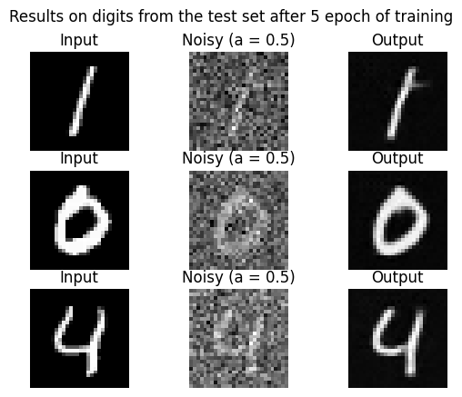
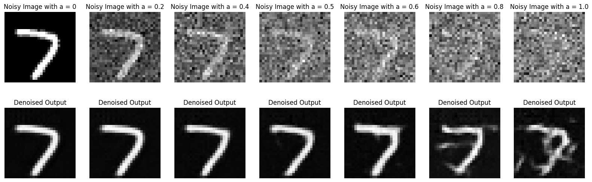
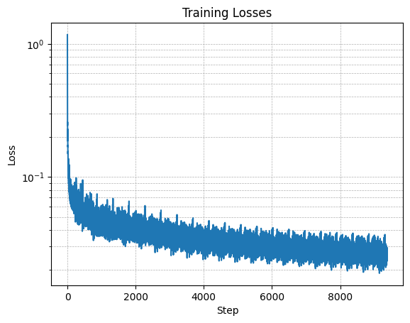

The output image appear to be corresponding to the prompt. However the style between each image is different, the men wearing hat appears to be realistic while the other two images appear to be in a cartoonish style, dispite the fact that the snomy mountain village image has 'oil painting' in its prompt.
We could see that after we reduce the number of inference steps to 5, the picture start to be noisy, this is expected as there would not be enough steps for the model to do denoising.
After modifying the number of inference steps to 50, while it takes longer to output image, the quality/resolution of images seem to increase. However, the style of the snowy mountain village is still cartoonish showing this is not a problem of steps, but of prompt.
Part 1: Sampling Loops
1.1 Implementing the Forward Process
CampanileNoisy Campanile at t=250Noisy Campanile at t=500Noisy Campanile at t=750
1.2 Classical Denoising
Noisy Campanile at t=250Noisy Campanile at t=500Noisy Campanile at t=750
Gaussian Blur Denoising at t=250Gaussian Blur Denoising at t=500Gaussian Blur Denoising at t=750
1.3 One-Step Denoising
Noisy Campanile at t=250Noisy Campanile at t=500Noisy Campanile at t=750
One-Step Denoised Campanile at t=250One-Step Denoised Campanile at t=500One-Step Denoised Campanile at t=750
We could see that iterative denoising performs much better than the other two methods.
1.5 Diffusion Model Sampling
Sample
1.6 Classifier-Free Guidance (CFG)
Sample (with cfg)
We could see that picture sampled with cfg has much better quality
1.7 Image-to-image Translation
test image at noise levels 1 test image at noise levels 3 test image at noise levels 5 test image at noise levels 7 test image at noise levels 10 test image at noise levels 20Original
test image at noise levels 1 noise levels 3 noise levels 5 noise levels 7noise levels 10 noise levels 20Original
test image at noise levels 1 noise levels 3 noise levels 20 noise levels 5 noise levels 7noise levels 10Original
Sample results on the test set after the first epoch
Sample results on the test set after the fifth epoch

Sample results on the test set with out-of-distribution noise levels after the model is trained

Part 2: Training a Diffusion Model
Time Conditioning UNet
Training Loss Curve
Sample results on the test set after 1 epoch
Sample results on the test set after 5 epoch
Sample results on the test set after 20 epoch
Class Conditioning UNet
Training Loss Curve

Sample results on the test set after 1 epoch
Sample results on the test set after 5 epoch
Sample results on the test set after 20 epoch
conclusion
This is a very fun project, helping me utilize and get familier with different funtionalities of diffusion model. The part of the visual anagrams is especially fun as how the algorithm could weave layers of information
into a single picture, like those master painters used to do.